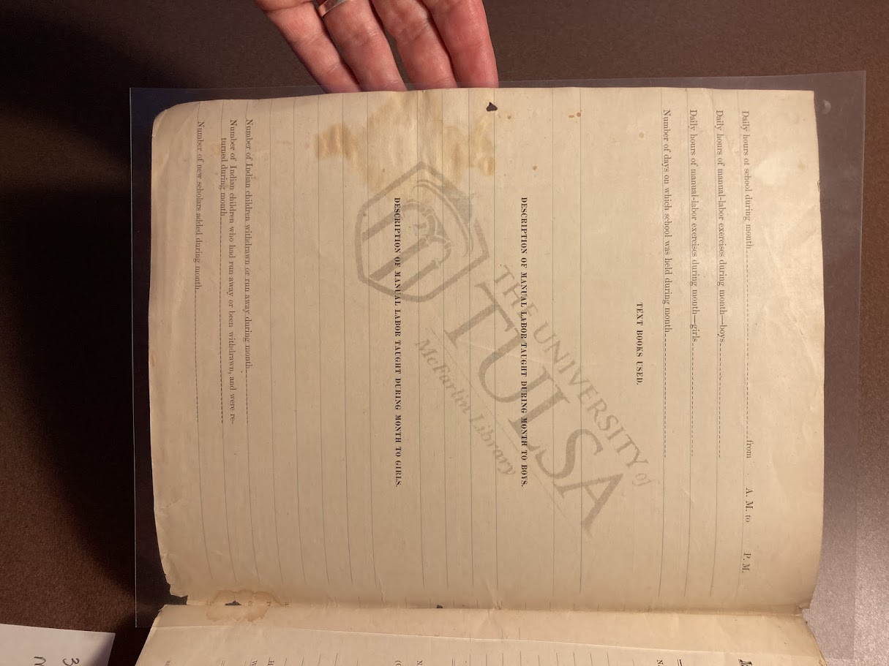

Claim:
This document shows us how technical professional writing has been, in a way, weaponized for the
purpose of dehumanizing the native american peoples by our government. The entire document is focused
only on what the school has taught these people, particularly in terms of physical labor. It is not at
all concerned with the health of the people it is inquiring about, or the mental state, it only cares
for things like what they have been taught to do.

Evidence:
Anyone receiving this report at the time it was being used wouldn’t look
at it and think of the actual people who it speaks about, they would look
at it and just care for the figures enclosed. On one of the pages, there is
a field asking how many Native American children had been either withdrawn
or run away. It does not care what reason they were pulled out for, or why
they would have run away, it just wants to know if they are gone, and if they
are returning.